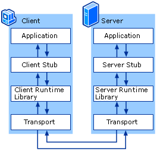

RPCX Introduction
rpcx is a RPC framework, faster, more features.
rpcx 2.0 and below extend Go standard rpc package but rpcx 3.0 has been refactored and doesn't use Go standard rpc anymore。
RPCX has developed for those targets:
- Simple: easy to learn, easy to develop, easy to intergate and easy to deploy
- Performance: high perforamnce (much better than grpc-go)
- Cross-platform: support raw slice of bytes, JSON, Protobuf and MessagePack. Theoretically it can be use in java, php, python, c/c++, node.js, c# and other platforms
- Service discovery and service governance: support zookeeper, etcd and consul.
It contains a lot of features:
- Support raw Go functions,. No need to define proto files.
- Pluggable. Features can be extended such as service discovery, tracing.
- Support TCP, HTTP, QUIC and KCP
- Support multiple codecs such as JSON、Protobuf、MessagePack and raw bytes.
- Service discovery. Support peer2peer, configured peers, zookeeper, etcd, consul and mDNS.
- Fault tolerance：Failover、Failfast、Failtry.
- Load banlancing：support Random, RoundRobin, Consistent hashing, Weighted, network quality and Geography.
- Support Compression.
- Support passing metadata.
- Support Authorization.
- Support heartbeat and one-way request.
- Other features: metrics, log, timeout, alias, CircuitBreaker.
- rpcx uses a binary protocol and platform-independent, that means you can develop services in other languages such as Java, python, nodejs, and you can use other prorgramming languages to invoke services developed in Go.
There is a UI manager: rpcx-ui.
RPC
RPC (remote procedure call) is when a computer program causes a procedure (subroutine) to execute in a different address space (commonly on another computer on a shared network), which is coded as if it were a normal (local) procedure call, without the programmer explicitly coding the details for the remote interaction. That is, the programmer writes essentially the same code whether the subroutine is local to the executing program, or remote. This is a form of client–server interaction (caller is client, executor is server), typically implemented via a request–response message-passing system. The RPC model implies a level of location transparency, namely that calling procedures is largely the same whether it is local or remote, but usually they are not identical, so local calls can be distinguished from remote calls. Remote calls are usually orders of magnitude slower and less reliable than local calls, so distinguishing them is important.
Response–request protocols date to early distributed computing in the late 1960s, theoretical proposals of remote procedure calls as the model of network operations date to the 1970s, and practical implementations date to the early 1980s. In the 1990s, with the popularity of object-oriented programming, the alternative model of remote method invocation (RMI) was widely implemented, such as in Common Object Request Broker Architecture (CORBA, 1991) and Java remote method invocation. RMIs in turn fell in popularity with the rise of the internet, particularly in the 2000s.
Remote procedure calls used in modern operating systems trace their roots back to the RC 4000 multiprogramming system, which used a request-response communication protocol for process synchronization. The idea of treating network operations as remote procedure calls goes back at least to the 1970s in early ARPANET documents. In 1978, Per Brinch Hansen proposed Distributed Processes, a language for distributed computing based on "external requests" consisting of procedure calls between processes.
Bruce Jay Nelson is generally credited with coining the term "remote procedure call" (1981), and the first practical implementation was by Andrew Birrel and Bruce Nelson, called Lupine, in the Cedar environment at Xerox PARC. Lupine automatically generated stubs, providing type-safe bindings, and used an efficient protocol for communication. One of the first business uses of RPC was by Xerox under the name "Courier" in 1981. The first popular implementation of RPC on Unix was Sun's RPC (now called ONC RPC), used as the basis for Network File System.
RPC is a kind of request–response protocol. An RPC is initiated by the client, which sends a request message to a known remote server to execute a specified procedure with supplied parameters. The remote server sends a response to the client, and the application continues its process. While the server is processing the call, the client is blocked (it waits until the server has finished processing before resuming execution), unless the client sends an asynchronous request to the server, such as an XHTTP call. There are many variations and subtleties in various implementations, resulting in a variety of different (incompatible) RPC protocols.
An important difference between remote procedure calls and local calls is that remote calls can fail because of unpredictable network problems. Also, callers generally must deal with such failures without knowing whether the remote procedure was actually invoked. Idempotent procedures (those that have no additional effects if called more than once) are easily handled, but enough difficulties remain that code to call remote procedures is often confined to carefully written low-level subsystems.

The above text is from wikipedia.
RPC is widely used in the microservice architure.
Microservices is a variant of the service-oriented architecture (SOA) architectural style that structures an application as a collection of loosely coupled services. In a microservices architecture, services should be fine-grained and the protocols should be lightweight. The benefit of decomposing an application into different smaller services is that it improves modularity and makes the application easier to understand, develop and test. It also parallelizes development by enabling small autonomous teams to develop, deploy and scale their respective services independently. It also allows the architecture of an individual service to emerge through continuous refactoring. Microservices-based architectures enable continuous delivery and deployment.
Commnucations between microservices can be used RPC or RESTful. They can aslo use other kinds of inter-process communication mechanisms.